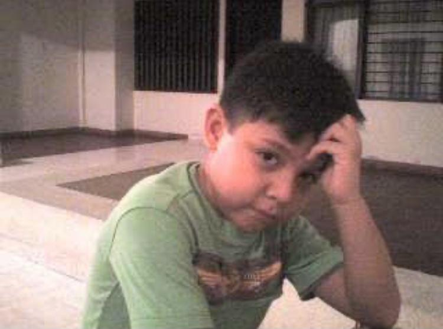
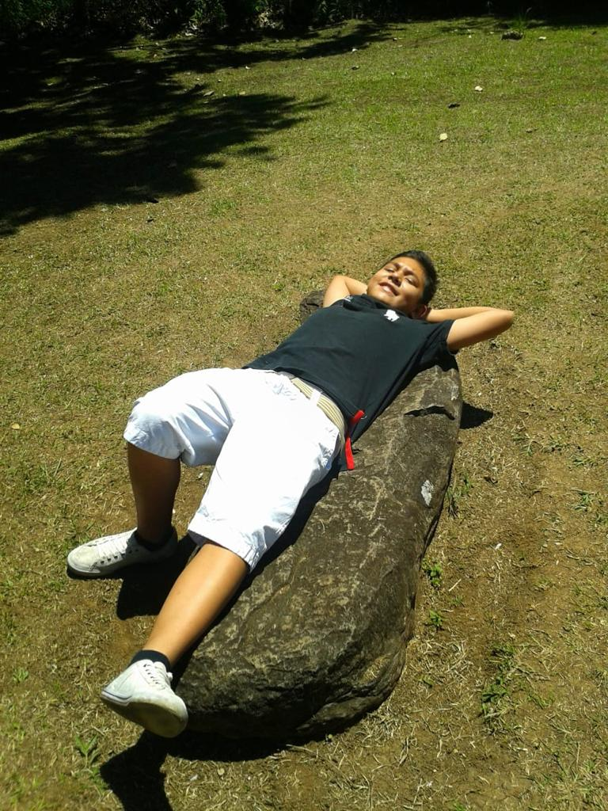
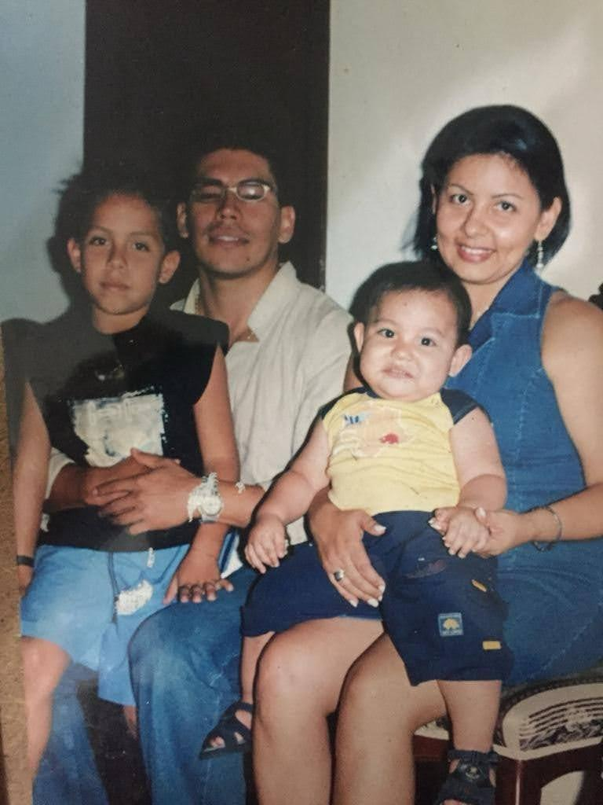
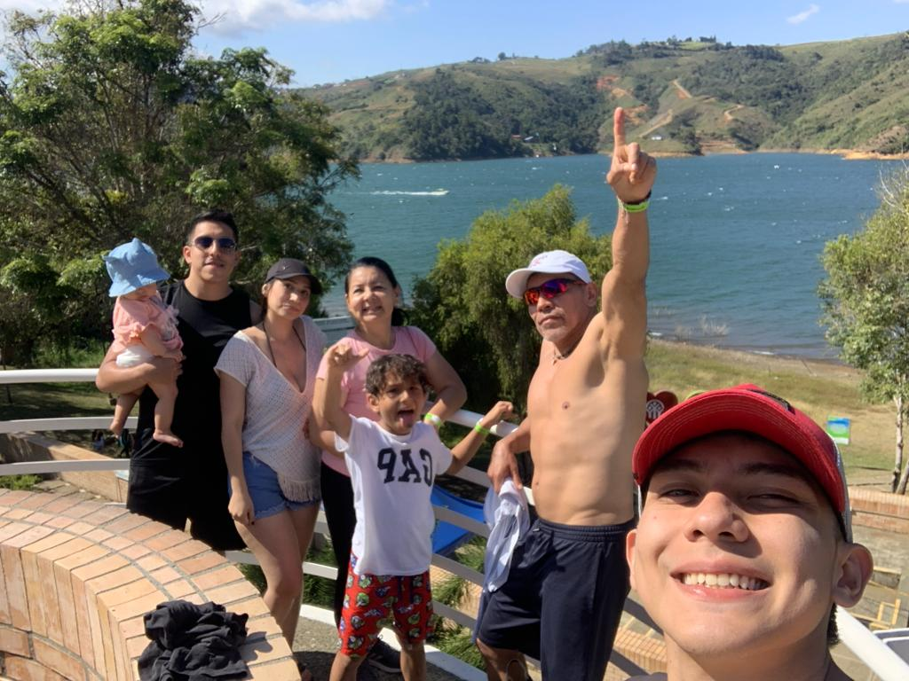
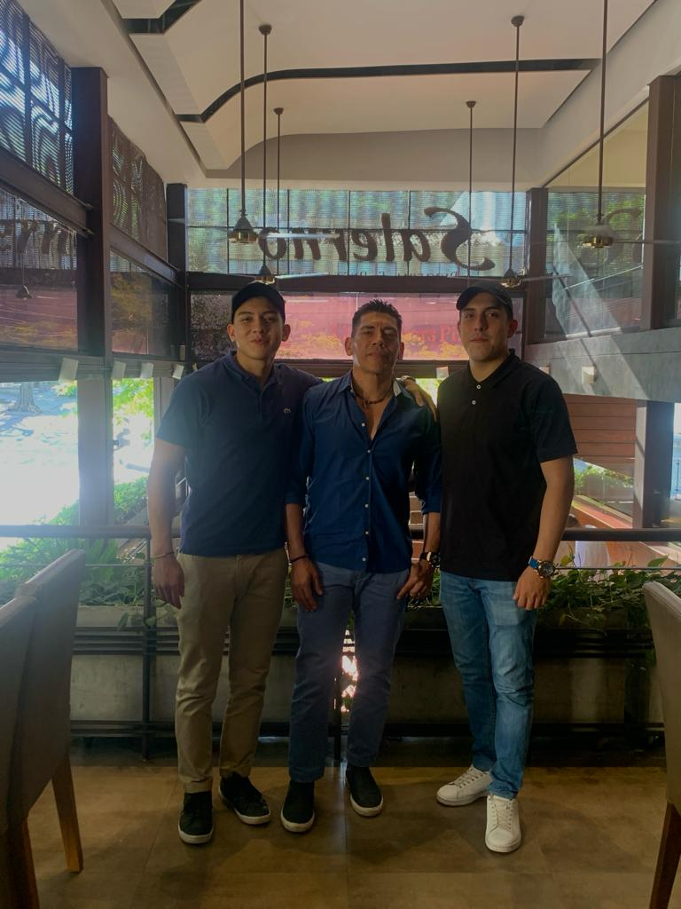
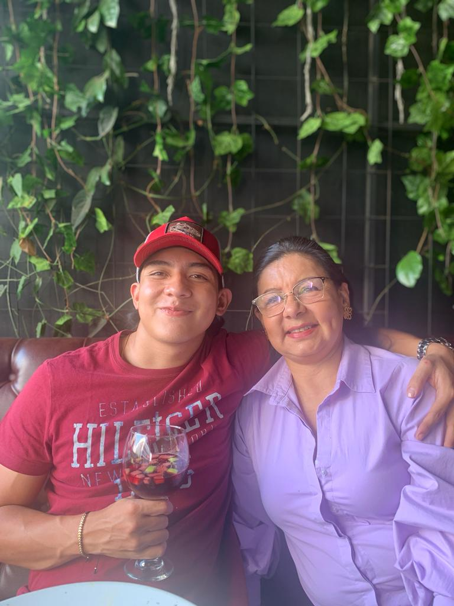

Vida Personal
Yo
Me considero una persona amable y dispuesta a ayudar, la solidaridad es la base de mi personalidad, me encanta trabajar en equipo ya sea como lider o colaborador a traves del tiempo he adquirido las habilidades necesarias para cumplir objetivos o tareas, me gusta el futbol y viajar por Colombia, mas adelante cuando sea ingeniero tendre la posibilidad de viajar por el mundo y conocer distintas culturas.
Infancia
Desde mi niñez he vivido en Cali, una ciudad hermosa que cada vez me enamora mas, asi como del America de Cali, el futbol fue esa pasion que desde pequeño quise seguir y la pasion de un pueblo del equipo americano fue la que me hizo seguirlo. Mi primera experiencia en el pascual Guerrero fue aproximadamente en el 2008, año que el America con jugadores espactaculares como Adrian Ramos, Pablo "Miñia" Armero, Pablo Arango y entre otros, hicieron del America nuevamente campeon.
  Familia
Somos una familia con raices caucanas, mi papa es nacido en Popayan y mi mama en Santander de Quilichao, tengo 2 hermanos, 2 sobrinos y una perrita. Usualmente nos gusta salir a comer en restaurantes, disfrutar de dias soleados y compartir tiempo juntos.
  